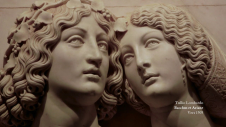

WELCOME TO THE LOUVRE
From the castle to the museum
VIRTUAL TOUR

ROYAL PALACE
360° Virtual Tour
Google Street Panorama View
PICTURE EXPLORE
Las Meninas is a 1656 painting by Diego Velázquez, the leading artist of the Spanish Golden Age.
It was cleaned in 1984 to remove a "yellow veil" of dust that had gathered since the previous restoration in the 19th century.
The cleaning provoked furious protests, not because the picture had been damaged in any way, but because it looked different.
VIDEO JOURNEY
Enter and visit one of the most famous museums in the world and enjoy masterpieces such as Mona Lisa or Hammurabi's Code


Exposition - Le Corps et l’Ame. De Dona...